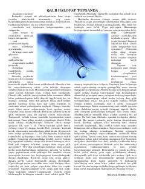

QHHayotdagi qiyinchiliklarga to'g'ri munosabatda bo'lish va qalb hotirjamligiga erishish sirlari.
Kitob kundalik hayotdagi qiyinchiliklar, tushkunlik va asabiylashish holatlariga boshqacha nazar solib, ularning asl sabablarini tushunishga yordam beradi. Muallif voqea-hodisalarga vazminlik bilan yondashish, qalb hotirjamligiga erishish va ichki muvozanatni topish yo'llarini tushuntirib beradi.